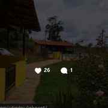

Piscina
Para aproveitar os dias de sol e relaxar.
Um refúgio para reunir família e amigos, aproveitar a piscina, preparar um almoço no fogão a lenha e curtir a paisagem da região de Peti.

O Sítio do Julinho fica em Peti, em Santa Bárbara/MG, e foi pensado para quem quer desacelerar sem abrir mão de uma boa estrutura para passar o dia ou reunir pessoas queridas.
Para aproveitar os dias de sol e relaxar.
Espaço ideal para refeições e confraternizações.
Clima de sítio para aquele almoço especial.
Paisagem natural para contemplar e curtir.
Conexão para manter o essencial por perto.
Uma opção para família, amigos e grupos.
Confira as fotos e novidades publicadas no perfil oficial.
Abrir InstagramAs fotos acima foram extraídas do material público apresentado para o Sítio do Julinho; novas fotos podem ser conferidas no Instagram oficial.
Imagine passar o dia entre piscina, churrasco, fogão a lenha e natureza. O Sítio do Julinho é uma opção para descanso, encontros em família e momentos especiais com amigos.
Fale diretamente pelo WhatsApp para consultar disponibilidade, valores e condições de locação.